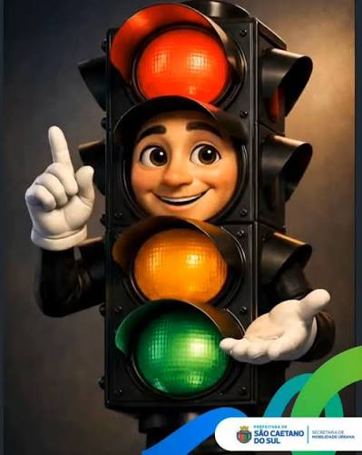

03 / Temas Contemporâneos Transversais
Ciência & tecnologia
Como as tecnologias digitais transformam tarefas, relações e espaços públicos.
A macroárea do grupo
Uso de novas tecnologias digitais
A ciência investiga fenômenos e produz conhecimento; a tecnologia transforma parte desse conhecimento em ferramentas e soluções. Juntas, elas apoiam avanços na medicina, nos transportes, na comunicação e na produção de alimentos.
No cotidiano
Facilidades e responsabilidades
Aplicativos bancários, mapas digitais, comunicação instantânea e serviços online ajudam a organizar a rotina e dão acesso rápido à informação. O uso dessas ferramentas também exige atenção à segurança, à privacidade, à inclusão e à avaliação crítica das informações.
Inteligência artificial
Sistemas que aprendem com dados
A inteligência artificial reúne técnicas que permitem a sistemas reconhecer padrões, processar linguagem e apoiar decisões. Seus resultados dependem dos dados e das escolhas de quem desenvolve e utiliza essas ferramentas; por isso, transparência, supervisão humana e uso responsável são importantes.
Tecnologia no município
Mobilidade e informação em Nova Santa Rosa
Semáforos inteligentes
Um semáforo inteligente pode usar sensores e sistemas de controle para adaptar o tempo dos sinais às condições do trânsito. Em comparação com temporizadores fixos, essa tecnologia pode ajudar a organizar o fluxo, mas depende de planejamento, manutenção e acessibilidade para pedestres.
Observação local
Segundo as informações reunidas pelos integrantes, Nova Santa Rosa não possui semáforos e conta com um painel digital na praça que informa o horário e as condições do tempo. Esse exemplo local mostra uma forma de tecnologia informativa presente no espaço público. Uma pesquisa complementar com a prefeitura pode identificar outras iniciativas municipais relacionadas ao tema.
Registro visual do projeto
Galeria de imagens
Deslize horizontalmente ou use os atalhos para navegar pelas imagens.



Vídeo sobre o tema
Semáforos inteligentes e mobilidade urbana
O projeto deve incluir um vídeo produzido pelo grupo ou uma referência audiovisual sobre o tema. O link abaixo abre resultados de pesquisa; substitua-o por um vídeo específico selecionado e revisado pelo grupo.
Pesquisar vídeos sobre o tema